기술혁신시스템 (TIS)
본문은 강의 내용 기준입니다. 보충 표지는 외부 지식입니다.
TIS — 한 기술이 사회에 안착하는 과정을 보는 시스템
Technological Innovation System (TIS) — a technology and the system around it
한 줄 정의
기술혁신시스템(TIS)은 특정 기술 하나를 중심에 두고, 그 기술이 처음 생겨나 사회에 자리 잡기까지 주변의 행위자·네트워크·제도·시장이 어떻게 움직이는지를 추적하는 틀이다. 질문: "기술의 변화는 어떤 기능을 거쳐 사회에 자리 잡는가?"
쉽게 말하면 보충
NIS가 나라 전체의 학교 시스템, SIS가 과목별(수학·미술) 교육 방식이라면, TIS는 한 학생이 입학해서 졸업하기까지의 성장 기록이다. "이 학생(기술)이 잘 크려면 누가 가르치고, 누가 돈을 대고, 누가 인정해 줘야 하나"를 시간 순서로 따라간다.
핵심 내용
슬라이드 (W07a p25–26)
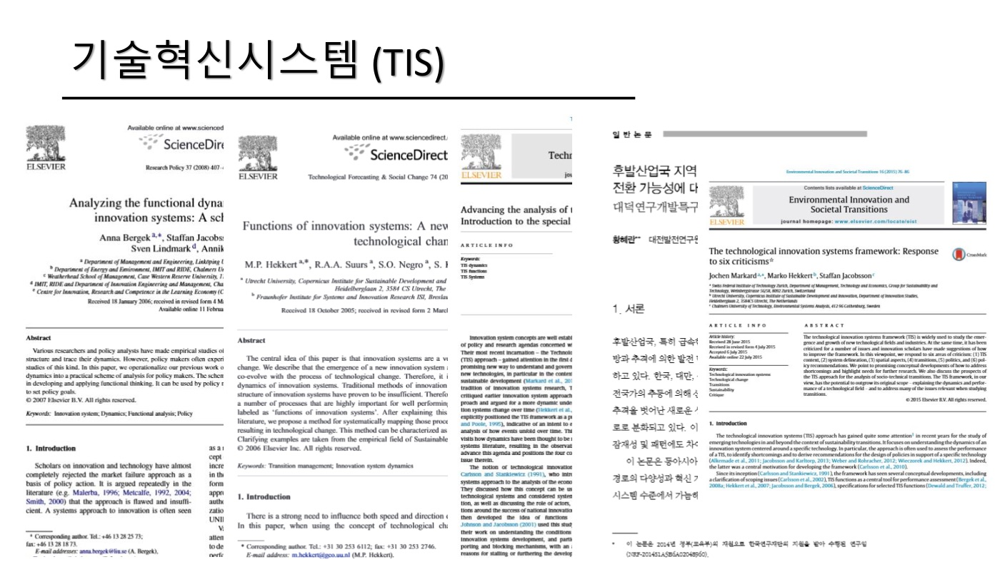
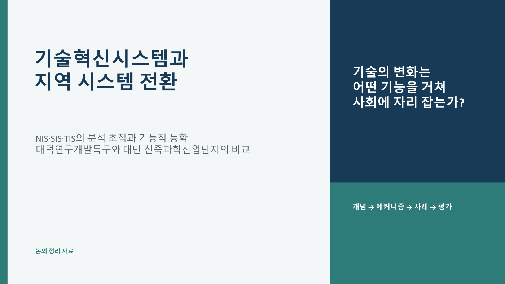
구성: NIS·SIS·TIS의 분석 초점과 기능적 동학 → 대덕연구개발특구와 대만 신주과학산업단지 비교. 흐름: 개념 → 메커니즘 → 사례 → 평가.
1) 왜 TIS인가 시험 포인트
- 지금까지 다룬 혁신시스템 관점은 모두 기술·사이언스·물질세계 쪽 이야기다(W01의 인간–제도–과학기술 삼각형 중 기술 쪽). 이것을 다 종합한 것이 GIS이고, 다음에 다룰 비즈니스 시스템부터는 조금 다른 이야기로 넘어간다.
- TIS는 Lundvall 등 스칸디나비아 연구자들의 흐름을 이어받았다.
- 시험 포인트NIS·SIS·RIS는 한 시점을 딱 잘라 놓고 본 것이고, TIS는 "기술이 처음 생겨나 사회에 안착하기까지 변하는 과정을 어떻게 볼 것인가"를 고민한 프레임이다. 2000년대 초반에 나와 연구가 많이 이뤄졌다.
보충단, 교수님은 바로 다음에 "NIS·SIS = 정태적, TIS = 동태적"이라는 구분은 정확하지 않다고 단서를 단다 → W08/02.
2) TIS는 기술과 그 기술을 둘러싼 시스템을 함께 본다 (W07a p29)
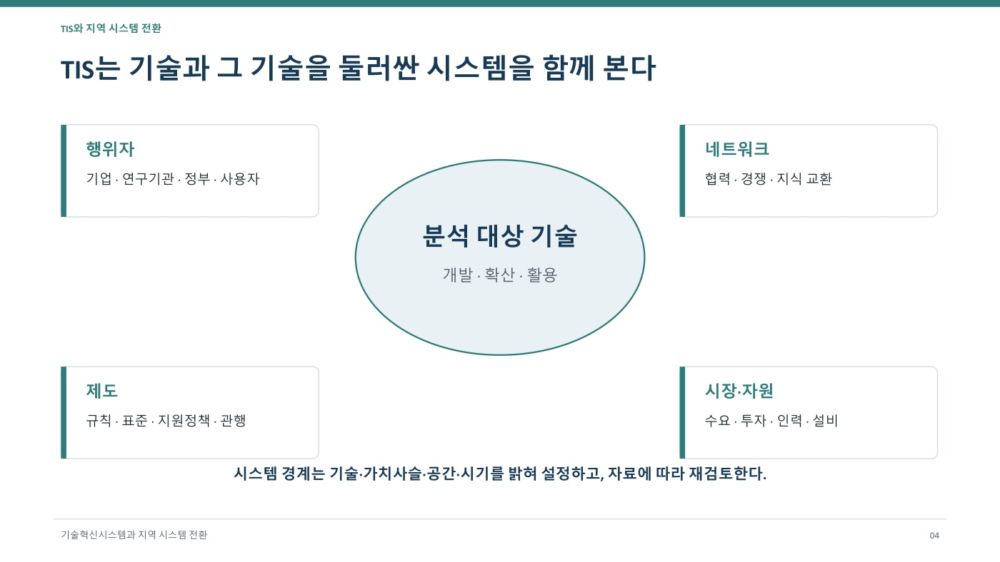
| 구성 | 내용 |
|---|---|
| 분석 대상 기술 | 개발 · 확산 · 활용 |
| 행위자 | 기업 · 연구기관 · 정부 · 사용자 |
| 네트워크 | 협력 · 경쟁 · 지식 교환 |
| 제도 | 규칙 · 표준 · 지원정책 · 관행 |
| 시장·자원 | 수요 · 투자 · 인력 · 설비 |
시험 포인트"시스템 경계는 기술·가치사슬·공간·시기를 밝혀 설정하고, 자료에 따라 재검토한다."
보충Term paper에서 TIS를 쓴다면 첫 단계가 이 경계 설정이다. "한국의 피지컬 AI"라고만 하면 너무 넓다. 어떤 기술(예: 제조 공정용 협동로봇), 어떤 가치사슬(부품~SI~현장), 어떤 공간(국내), 어떤 시기(2020~)를 먼저 정해야 한다. 이게 안 되면 W08/07의 경계 비판을 그대로 받는다.
수업에서 나온 논점
- 이날 함께 본 논문: 황혜란(대전발전연구원)이 TIS를 대덕연구개발특구 vs 대만 신주과학산업단지 비교에 적용한 연구 → W08/08. (계획표상 TIS 주차 Core Reading: Bergek et al. 2008; 황혜란 2016)
- 보충W07-1/07 Frame 3.0에서 본 Geels 사회기술시스템과 다르다. TIS는 한 기술의 성장을, 사회기술시스템은 교통·에너지 같은 사회적 기능 전체의 전환을 본다. W08/07의 '전환 분석 비판'이 이 차이에서 나온다.
보충 사례 보충
- 보충TIS의 대표 적용 분야는 재생에너지다. 스웨덴·네덜란드 연구자들(Jacobsson, Bergek, Hekkert 등)이 태양광·풍력·바이오연료가 왜 어떤 나라에선 크고 어떤 나라에선 막히는지를 이 틀로 분석했다.
수업 프레임에서의 위치
- W01/10 강의 지도에서 TIS는 "구조의 변화" 축의 첫 이론이다(TS·TIS·StS + Transition). NIS·SIS(구조의 차이) 다음으로 넘어가는 문턱.
출처 · 태그
리딩
- Bergek et al. (2008) ★TIS Core Reading
- Hekkert et al. (2007)
수업노트
- 수업노트/W08_강의기록_261024.md §2-1
태그
예상 퀴즈 포인트
- TIS가 무엇을 분석하는 틀인지 설명하고, 분석 대상(기술)을 둘러싼 시스템 구성 요소를 쓰라. 서술형
- TIS 분석에서 시스템 경계를 설정할 때 밝혀야 할 네 가지는 무엇인가? 서술형
NIS · SIS · TIS — 분석 단위가 다르다
NIS vs SIS vs TIS — different units of analysis, all dynamic
한 줄 정의
NIS(국가), SIS(산업부문), TIS(특정 기술)는 분석 단위와 핵심 질문이 다른 세 혁신시스템 틀이다. 시험 포인트셋의 구분은 "정태적 대 동태적"이 아니라, 변화의 단위를 무엇으로 잡고 어떻게 추적하느냐에 있다. 셋은 서로 배타적이지 않고 상호 보충적이다.
쉽게 말하면 보충
같은 도시의 교통을 세 가지 지도로 본다. 전국 도로망(NIS), 버스·지하철 노선별 지도(SIS), 새로 생긴 자율주행 셔틀 한 노선의 개통 과정(TIS). 어느 지도가 더 "움직이는" 지도라기보다, 무엇을 보려고 하느냐에 따라 맞는 지도가 다르다. 그리고 셋을 겹쳐 보면 더 잘 보인다.
핵심 내용
슬라이드 (W07a p27)
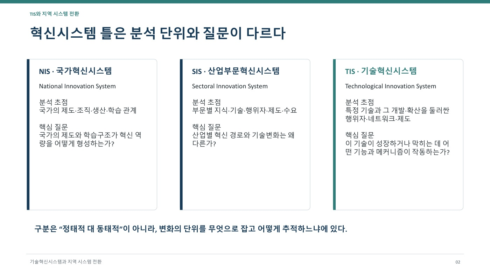
세 틀의 비교 (W07a p28) 시험 포인트
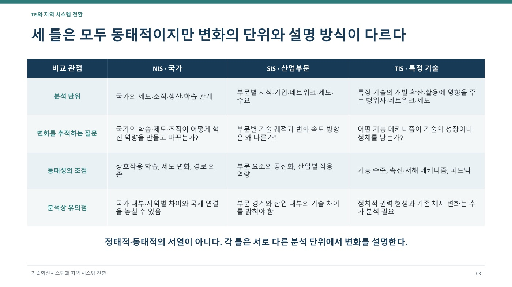
| NIS · 국가 | SIS · 산업부문 | TIS · 특정 기술 | |
|---|---|---|---|
| 분석 단위 | 국가의 제도·조직·생산·학습 관계 | 부문별 지식·기업·네트워크·제도·수요 | 특정 기술의 개발·확산·활용에 영향을 주는 행위자·네트워크·제도 |
| 핵심 질문 | 국가의 제도와 학습구조가 혁신 역량을 어떻게 형성하는가? | 산업별 혁신 경로와 기술변화는 왜 다른가? | 이 기술이 성장하거나 막히는 데 어떤 기능과 메커니즘이 작동하는가? |
| 동태성의 초점 | 상호작용 학습, 제도 변화, 경로 의존 | 부문 요소의 공진화, 산업별 적응 역량 | 기능 수준, 촉진·저해 메커니즘, 피드백 |
| 분석상 유의점 | 국가 내부·지역별 차이와 국제 연결을 놓칠 수 있음 | 부문 경계와 산업 내부의 기술 차이를 밝혀야 함 | 정치적 권력 형성과 기존 체제 변화는 추가 분석 필요 |
"정태적·동태적의 서열이 아니다. 각 틀은 서로 다른 분석 단위에서 변화를 설명한다."
1) 셋 다 동태적이다 시험 포인트
- "정태적 vs 동태적"이라는 구분은 정확하지 않다. NIS·SIS도 내부 상호작용이 있으니 정태적이라고만 볼 수 없다. 셋 다 동태적이지만 변화의 단위와 설명력이 다르다.
- TIS는 시간을 두고 한 시스템이 어떻게 변하는지를 추적한다는 의미에서 더 동태적이다.
보충시험 포인트교수님이 2-1절에서는 "NIS·SIS는 한 시점을 잘라 본 것"이라고 하고 바로 "정태적이라는 구분은 정확하지 않다"고 고쳤다. 퀴즈 답안에서는 슬라이드 문장 — "서열이 아니라 분석 단위의 차이" — 을 쓰는 게 안전하다.
2) Q17. 셋은 서로 배타적인가
- 한 참석자가 채팅에 "NIS·SIS·TIS는 구별되는 개념이 아니라 중복 설명이 가능한 상호 보충 개념"이라고 적자 교수님이 동의했다.
보충실제 분석에서는 겹쳐 쓴다. 예: "한국 반도체"는 NIS(국가 정책·재벌), SIS(규모집약+과학기반 산업 특성), TIS(EUV 같은 특정 기술의 도입 과정)로 모두 볼 수 있다.
수업에서 나온 논점
- 보충각 틀의 유의점 행이 다음 이론들의 동기가 된다. NIS의 '국제 연결 누락' → GIS, TIS의 '정치·기존 체제 변화 누락' → 사회기술시스템(StS)·전환론.
- Term paper 오리엔테이션(W07)에서 교수님은 "한두 개를 섞어 쓰셔도 된다"고 했다. 상호 보충이라는 이 결론과 같은 말이다.
보충 사례 보충
- 보충RIS(지역혁신시스템): 교수님이 NIS·SIS와 함께 언급한 네 번째 단위. 지역(예: 실리콘밸리, 판교) 단위로 본다. 황혜란 논문(W08/08)이 TIS의 기능 분석을 RIS 단위에 적용한 것이다.
수업 프레임에서의 위치
- W06(NIS) → W07-2(SIS) → W08(TIS)로 이어진 '시스템 3부작'을 한 표로 정리하는 개념. 퀴즈 비교형 1순위.
출처 · 태그
리딩
- Bergek et al. (2008)
- Lundvall (2007)
- Malerba (2002)
수업노트
- 수업노트/W08_강의기록_261024.md §2-2
- 수업노트/W08_강의기록_261024.md §3 Q17
태그
예상 퀴즈 포인트
- NIS·SIS·TIS를 분석 단위·핵심 질문·동태성의 초점·분석상 유의점으로 비교하라. 비교형
- "세 틀의 구분은 정태적 대 동태적이 아니다"라는 주장의 의미를 설명하라. 서술형
- 한 사례(예: 한국 반도체, 국내 AI 도입)를 세 틀로 각각 어떻게 분석할 수 있는지 쓰라. 서술형
TIS의 일곱 기능 — 그리고 '정당성 형성'
Seven functions of TIS (Hekkert et al. 2007; Bergek et al. 2008); legitimation; virtuous and vicious cycles
한 줄 정의
TIS는 한 기술이 크는 과정을 일곱 기능으로 쪼개 묻는다 — 기업가적 활동 · 지식 개발 · 네트워크를 통한 지식 확산 · 탐색 방향 형성 · 시장 형성 · 자원 동원 · 정당성 형성. 기능은 순서대로 밟는 단계가 아니라 시스템에서 얼마나 수행되는지 살피는 분석 범주이고, 서로 영향을 주며 선순환(모멘텀) 또는 악순환(정체)을 만든다. 그리고 이전 틀에 없던 정당성(legitimation)이 들어왔다.
쉽게 말하면 보충
새 식당 하나가 동네에 자리 잡으려면 일곱 가지가 필요하다.
- 도전하는 사장(기업가적 활동)
- 레시피 개발(지식 개발)
- 요리사끼리 노하우 교환(지식 확산)
- "요즘 비건이 뜬다"는 분위기(탐색 방향)
- 첫 단골손님(시장 형성)
- 창업 자금·직원·주방 설비(자원 동원)
- "저 집 괜찮대"라는 동네 평판(정당성)
손님이 늘면 돈이 모이고, 돈이 모이면 메뉴가 늘고… 선순환. 하나라도 막히면 다 같이 주저앉는다.
핵심 내용
일곱 기능 (W07a p30) 시험 포인트
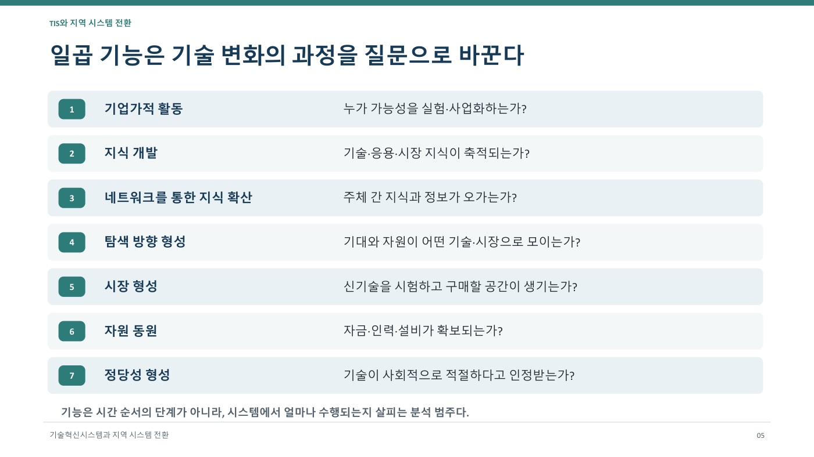
| # | 기능 | 질문 |
|---|---|---|
| 1 | 기업가적 활동 | 누가 가능성을 실험·사업화하는가? |
| 2 | 지식 개발 | 기술·응용·시장 지식이 축적되는가? |
| 3 | 네트워크를 통한 지식 확산 | 주체 간 지식과 정보가 오가는가? |
| 4 | 탐색 방향 형성 (guidance of search) | 기대와 자원이 어떤 기술·시장으로 모이는가? |
| 5 | 시장 형성 | 신기술을 시험하고 구매할 공간이 생기는가? |
| 6 | 자원 동원 | 자금·인력·설비가 확보되는가? |
| 7 | 정당성 형성 (legitimation) | 기술이 사회적으로 적절하다고 인정받는가? |
시험 포인트"기능은 시간 순서의 단계가 아니라, 시스템에서 얼마나 수행되는지 살피는 분석 범주다."
보충외우는 요령: 사람(1) → 지식(2·3) → 방향(4) → 시장(5) → 돈(6) → 인정(7).
1) 정당성이 들어왔다 — 시민의 자리? 시험 포인트
아까 우리 '시민이 언제 등장하느냐' 이런 질문을 했었는데, 여기 딱 시민은 아니지만 레지티메이션까지 집어넣었어요. 이전 프레임워크에서는 레지티메이션까지는 집어넣지 않았는데.
보충시험 포인트"아까"는 같은 날 전반부의 NIS 토론(Q4·Q7·Q8 — 시민 중심 NIS, 시민 인식론)이다. 교수님의 평가는 두 겹이다.
- 진전: NIS·SIS에 없던 "사회가 이 기술을 받아들이는가"가 기능으로 들어왔다. W03/18 McCloskey의 "시민 승인 못 얻은 기술은 소멸", W05-1/06 "사람들이 인정해야" 강건한 지식과 같은 문제의식.
- 한계: 그래도 "딱 시민은 아니다." 정당성은 기술이 받아들여지는지를 보는 기능이지, 시민이 방향을 정하는 자리가 아니다. W08/07에서 교수님은 "레지티메이션 정도밖에 안 들어오니까"라고 한계를 지적한다.
2) 기능은 서로 영향을 준다 (W07a p31)
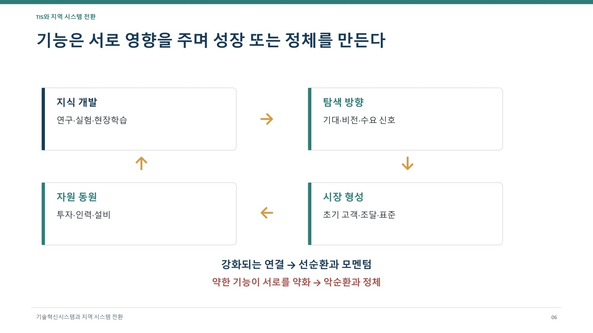
지식 개발(연구·실험·현장학습) → 탐색 방향(기대·비전·수요 신호) → 시장 형성(초기 고객·조달·표준) → 자원 동원(투자·인력·설비) → 다시 지식 개발. 강화되는 연결 → 선순환과 모멘텀 / 약한 기능이 서로를 약화 → 악순환과 정체.
3) 시장이 먼저 올 수도 있다 — 한국 자동차
- 순서가 정해진 것은 아니다. 항상 지식 개발부터 시작하는 게 아니고, 시장이 먼저 올 수도 있다.
딴 데서 개발된 걸 끌어모으면 시장이 먼저 될 수도 있죠. 우리나라 자동차가 그렇지. 자동차 시장을 먼저 만들고, 록다운시킨 다음에 자원 동원해서 지식 개발하고, 그다음에 새로운 거 만들고.
보충W02-1/09 후발국의 역방향 기술 궤적이 TIS 기능 순서로 다시 나타난 것이다. 선진국은 지식 개발 → 시장, 후발국은 시장 → 자원 → 지식.
수업에서 나온 논점
- 수업노트 토론 질문 후보: TIS의 "정치의 주변화" 비판 — 정당성(legitimation) 기능 하나로 정치를 충분히 담을 수 있나 → W08/07.
- 보충W06/10에서 NIS가 덜 설명한다고 한 "누가 의제를 정하나"는 TIS 일곱 기능 중 탐색 방향 형성과 정당성 형성에 걸쳐 있다. 다만 TIS는 그것을 '기능이 잘 수행되는가'로만 묻고 '누가 정하나'는 묻지 않는다.
보충 사례 보충
- 보충원자력과 정당성: 기술·자원·시장이 다 있어도 정당성 기능이 무너지면(후쿠시마 이후 독일 탈원전) 시스템 전체가 축소된다. 반대로 신고리 5·6호기 공론화(W05)는 정당성 기능을 절차로 회복한 사례로 읽을 수 있다.
- 보충'혁신의 모터'(motors of innovation, Suurs & Hekkert 2009): 기능들이 특정 순서로 맞물려 도는 패턴. 과학기술 주도 모터, 기업가 모터, 시스템 구축 모터, 시장 모터 등으로 나눈다. 슬라이드 p31의 선순환 그림을 더 세분한 것이다.
수업 프레임에서의 위치
- TIS의 핵심 도구. W08/04 메커니즘 분석, W08/05·06 사례, W08/08 대덕·신주 비교가 모두 이 일곱 기능으로 진단한다.
출처 · 태그
리딩
- Hekkert et al. (2007)
- Bergek et al. (2008)
수업노트
- 수업노트/W08_강의기록_261024.md §2-3
태그
예상 퀴즈 포인트
- TIS의 일곱 기능을 쓰고 각각의 핵심 질문을 설명하라. 서술형
- TIS에 '정당성 형성' 기능이 들어간 것의 의미를 설명하고, 교수님이 이를 "딱 시민은 아니지만"이라고 평가한 이유를 논하라. 서술형
- "기능은 시간 순서의 단계가 아니다"라는 말을 한국 자동차 사례(시장이 먼저)로 설명하라. 서술형
기능 진단과 촉진·저해 메커니즘
Functional diagnosis vs mechanisms — inducement and blocking mechanisms
한 줄 정의
TIS 분석은 두 단계다. 기능 진단은 일곱 기능 중 무엇이 약한지("시장 형성이 약하다")를 찾고, 메커니즘 분석은 왜 그런지("왜 수요가 표현되지 않는가")를 묻는다. 원인은 기능을 밀어 주는 촉진 메커니즘(inducement)과 막는 저해 메커니즘(blocking)으로 나뉜다. 그리고 하나의 메커니즘이 여러 기능을 한꺼번에 바꾼다.
쉽게 말하면 보충
건강검진과 같다. 기능 진단 = "간 수치가 높습니다"(무엇이). 메커니즘 분석 = "음주 때문인가, 약 때문인가"(왜). 그리고 수면 부족 하나가 간·혈압·체중을 동시에 나쁘게 만들 수 있다(하나의 메커니즘이 여러 기능을 바꿈).
핵심 내용
기능 vs 메커니즘 (W07a p32) 시험 포인트
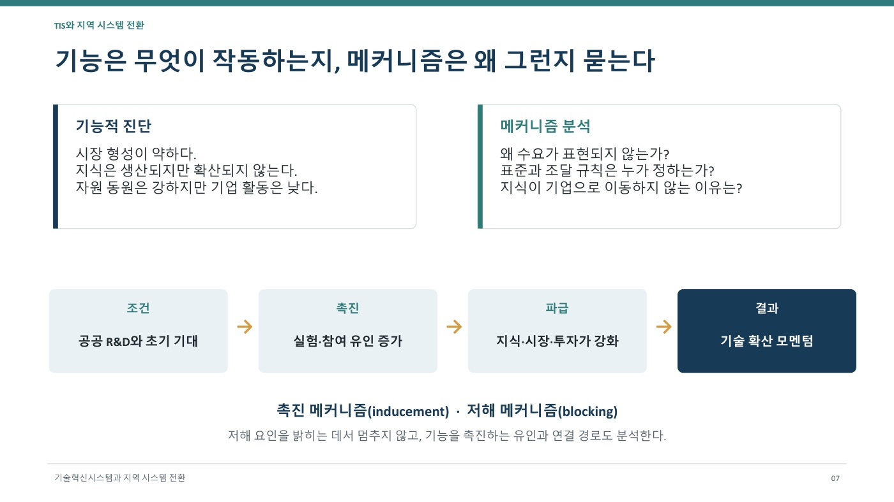
| 기능적 진단 (무엇이) | 메커니즘 분석 (왜) |
|---|---|
| 시장 형성이 약하다 | 왜 수요가 표현되지 않는가? |
| 지식은 생산되지만 확산되지 않는다 | 표준과 조달 규칙은 누가 정하는가? |
| 자원 동원은 강하지만 기업 활동은 낮다 | 지식이 기업으로 이동하지 않는 이유는? |
선순환의 예: 조건(공공 R&D와 초기 기대) → 촉진(실험·참여 유인 증가) → 파급(지식·시장·투자 강화) → 결과(기술 확산 모멘텀). "저해 요인을 밝히는 데서 멈추지 않고, 기능을 촉진하는 유인과 연결 경로도 분석한다."
촉진 vs 저해 메커니즘 (W07a p33) 시험 포인트
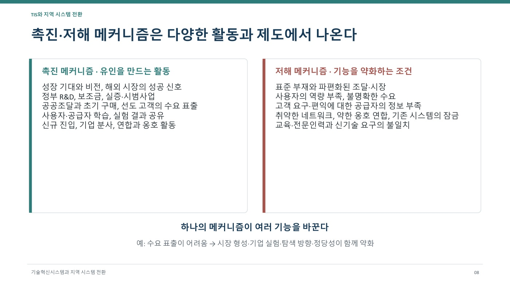
| 촉진 메커니즘 (유인을 만드는 활동) | 저해 메커니즘 (기능을 약화하는 조건) |
|---|---|
| 성장 기대와 비전, 해외 시장의 성공 신호 | 표준 부재와 파편화된 조달·시장 |
| 정부 R&D, 보조금, 실증·시범사업 | 사용자의 역량 부족, 불명확한 수요 |
| 공공조달과 초기 구매, 선도 고객의 수요 표출 | 고객 요구·편익에 대한 공급자의 정보 부족 |
| 사용자·공급자 학습, 실험 결과 공유 | 취약한 네트워크, 약한 옹호 연합, 기존 시스템의 잠금 |
| 신규 진입, 기업 분사, 연합과 옹호 활동 | 교육·전문인력과 신기술 요구의 불일치 |
시험 포인트"하나의 메커니즘이 여러 기능을 바꾼다. 예: 수요 표출이 어려움 → 시장 형성·기업 실험·탐색 방향·정당성이 함께 약화."
보충시험 포인트저해 메커니즘 목록에 수요 쪽 항목이 많다(사용자 역량 부족, 불명확한 수요, 고객 요구 정보 부족). 교수님이 학기 내내 말한 "공급자 중심성"의 문제가 TIS에서는 저해 메커니즘으로 나타난다. '기존 시스템의 잠금'은 W01/05 고착(lock-in) 그대로다.
교수님의 현재 사례 — 광주·전남 반도체 메가 프로젝트 시험 포인트
- 저해 메커니즘: 인력 부족, 약한 네트워크, 물·전력 문제가 작동하고 있다. 군공항 이전 부지에 신도시를 세우는 게 맞는가, 기존 구도심을 개발하는 길은 없는가 같은 고민.
- 촉진 메커니즘: 수요 기대, 해외 시장 신호, 막대한 정부 지원.
보충W06/11에서 교수님이 언급한 광주 대형 시설의 전력·용수 논란과 같은 사례 계열이다. 같은 날 Q18에서 교수님은 이 프로젝트가 "그나마 가능성이 있는" 이유를 세계 시장과 연결된 앵커로 들었다 → W08/09.
수업에서 나온 논점
- Term paper 후보(수업노트 표시): TIS 일곱 기능과 촉진·저해 메커니즘으로 한 기술의 국내 확산을 진단하는 케이스(예: 사내 AI 도입, 피지컬 AI, 재택돌봄 AI 전화 서비스). 교수님이 "누가 쓸 거냐, 수요에서 시작해야 한다"고 강조한 지점과 연결된다.
보충 사례 보충
- 보충수소차 충전소: 차는 있는데 충전소가 적고(표준·인프라 부재), 충전소는 차가 적어 수익이 안 난다(시장 형성 약함). '닭과 달걀' 문제가 저해 메커니즘이 여러 기능을 동시에 약화시키는 전형이다.
수업 프레임에서의 위치
- TIS의 진단 도구. 일곱 기능(W08/03)이 체크리스트라면, 메커니즘은 처방의 근거다. 다음 두 사례(W08/05·06)가 이 틀을 그대로 적용한다.
출처 · 태그
리딩
- Bergek et al. (2008)
수업노트
- 수업노트/W08_강의기록_261024.md §2-4
태그
예상 퀴즈 포인트
- TIS에서 '기능 진단'과 '메커니즘 분석'의 차이를 예를 들어 설명하라. 비교형
- 촉진 메커니즘과 저해 메커니즘을 각각 세 가지 이상 들고, "하나의 메커니즘이 여러 기능을 바꾼다"는 말을 수요 표출 사례로 설명하라. 서술형
- 한 지역·기술 사례(예: 광주·전남 반도체)에 촉진·저해 메커니즘을 적용해 보라. 서술형
사례 1 — IT 재택돌봄: R&D는 밀어 주는데 수요·표준이 막는다
Case 1 — IT in home care (Sweden): inducement by R&D and expectations, blocking by weak demand and missing standards
한 줄 정의
노인·환자의 재택 돌봄에 IT를 적용하는 TIS 사례. 고령화·성장 기대·정부 R&D가 기능을 밀어 줬지만, 표준 부재로 시장이 지역별로 쪼개지고, 노인 사용자의 역량이 부족해 수요가 표현되지 않아 시장·실험·정당성이 함께 약해졌다. 한국의 독거노인 비상벨도 같은 이유로 실패했고, 오히려 전화해 주는 서비스가 터졌다.
쉽게 말하면 보충
할머니께 최신 스마트워치를 선물했는데 서랍에 들어가 있다. 기술이 나빠서가 아니라 할머니가 뭘 원하는지 안 물어봤기 때문이다. 할머니가 원한 건 버튼이 아니라 말벗이었다.
핵심 내용
무엇이 시스템을 이루는가 (W07a p34)
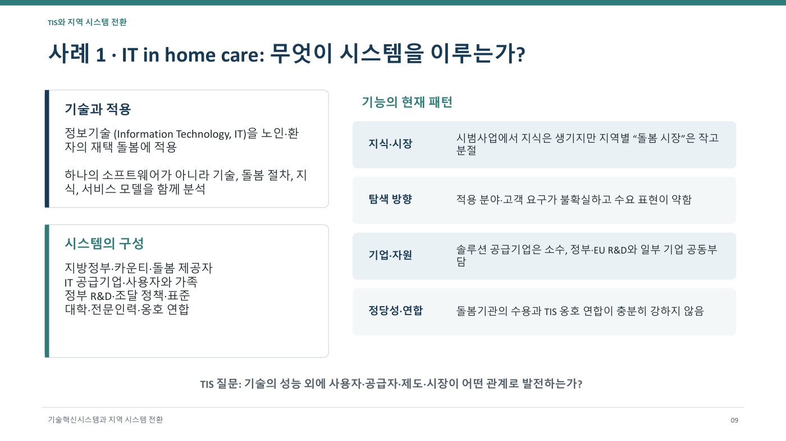
- 하나의 소프트웨어가 아니라 기술, 돌봄 절차, 지식, 서비스 모델을 함께 분석.
- 시스템 구성: 지방정부·카운티·돌봄 제공자 / IT 공급기업·사용자와 가족 / 정부 R&D·조달 정책·표준 / 대학·전문인력·옹호 연합
- 기능 패턴:
| 기능 | 상태 |
|---|---|
| 지식·시장 | 시범사업에서 지식은 생기지만 지역별 "돌봄 시장"은 작고 분절 |
| 탐색 방향 | 적용 분야·고객 요구가 불확실, 수요 표현이 약함 |
| 기업·자원 | 솔루션 공급기업 소수, 정부·EU R&D와 일부 기업 공동부담 |
| 정당성·연합 | 돌봄기관의 수용과 옹호 연합이 충분히 강하지 않음 |
촉진 vs 저해 (W07a p35) 시험 포인트
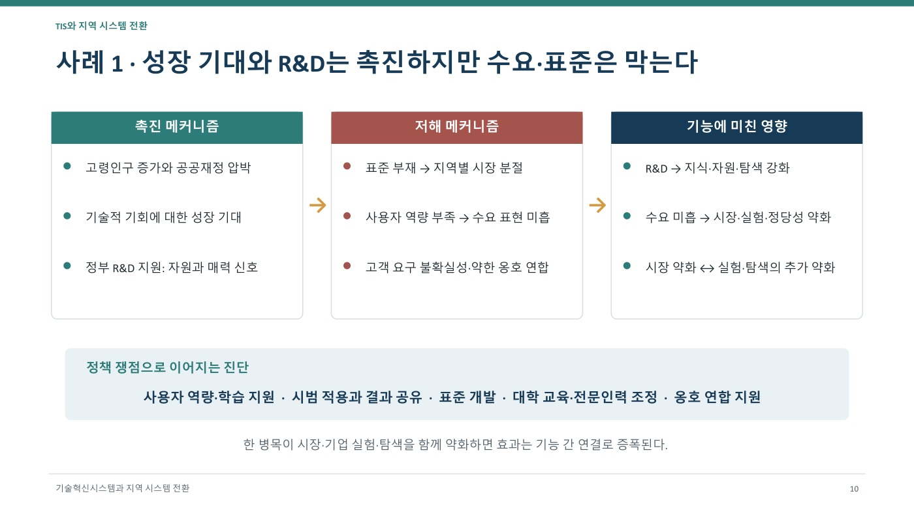
| 촉진 | 저해 | 기능에 미친 영향 |
|---|---|---|
| 고령인구 증가·공공재정 압박 | 표준 부재 → 지역별 시장 분절 | R&D → 지식·자원·탐색 강화 |
| 기술적 기회에 대한 성장 기대 | 사용자 역량 부족 → 수요 표현 미흡 | 수요 미흡 → 시장·실험·정당성 약화 |
| 정부 R&D 지원 | 고객 요구 불확실성·약한 옹호 연합 | 시장 약화 ↔ 실험·탐색의 추가 약화 |
처방: 사용자 역량·학습 지원 / 시범 적용과 결과 공유 / 표준 개발 / 대학 교육·전문인력 조정 / 옹호 연합 지원. "한 병목이 시장·기업 실험·탐색을 함께 약화하면 효과는 기능 간 연결로 증폭된다."
한국 독거노인 — 비상벨 vs 전화 서비스 시험 포인트
독거노인한테 초창기에는 비상벨을 많이 설치했어요. 근데 작동이 안 돼. 사람들이 안 눌러요. 그분들 입장에서 잘 쓰는 거를 했어야 되는데. 오히려 생각보다 잘 됐던 건 전화해 주는 서비스. 처음엔 사람이 하다가 AI로 바뀌었는데, 전화하면 별 얘기를 다 하세요. 혼자 있으니까 얘기할 사람이 없으니까. 충분히 시장 조사를 하고 사람들이 뭘 원하는지를 따져야 되는데. 어쨌든 생각지도 못한 데서 터지는 것도 있어요.
- 스칸디나비아는 땅은 넓고 인구 밀도가 낮아 오히려 TV(화상)가 잘 됐다고 한다 — 노인들이 모여 앉아 지금 Zoom 하듯 서로 얼굴 보며 이야기하는 식.
보충시험 포인트비상벨은 공급자가 정의한 문제(응급 상황)에 대한 답이었고, 전화 서비스는 사용자가 실제로 가진 문제(외로움)에 맞았다. W02-1/06 불만족스러운 혁신(생산자 지배 → 사용자 수요와 괴리)의 한국판이자, W07-1/07 Frame 3.0의 "기술이 아니라 사회적 기능"(돌봄 = 관계)이 왜 중요한지를 보여 준다.
수업에서 나온 논점
- Term paper 후보(수업노트 표시)의 예시 중 하나가 재택돌봄 AI 전화 서비스를 TIS로 진단하는 것이다.
- 보충같은 날 Q4에서 교수님이 그린 시민 중심 NIS(노인 버스 무료, 자율주행)와 맞닿는다. 돌봄을 공공서비스로 정하면 그때 시장이 열린다(W05-2/07).
보충 사례 보충
- 보충한국에서는 지자체들이 AI 스피커·AI 안부전화를 독거노인 돌봄에 도입해 왔다(예: 네이버 '클로바 케어콜'). 대화 데이터로 이상 징후를 감지하는 기능도 붙었다. 교수님이 말한 "사람이 하다가 AI로 바뀐" 서비스가 이것이다.
수업 프레임에서의 위치
- W08/04의 촉진·저해 틀을 적용한 첫 사례. 핵심 교훈은 "R&D(공급)가 강해도 수요가 표현되지 않으면 시스템이 자라지 않는다."
출처 · 태그
리딩
- Bergek et al. (2008)
수업노트
- 수업노트/W08_강의기록_261024.md §2-5
태그
예상 퀴즈 포인트
- IT 재택돌봄 사례에서 촉진 메커니즘과 저해 메커니즘을 정리하고, 어떤 기능이 강화·약화되었는지 설명하라. 서술형
- 한국 독거노인 비상벨 실패와 전화 서비스 성공을 TIS(수요 표현) 또는 불만족스러운 혁신 관점에서 설명하라. 서술형
사례 2 — 독일 풍력터빈과 덴마크 Vestas
Case 2 — German wind turbines; the Danish bottom-up story and Vestas
한 줄 정의
독일 풍력 산업은 해외 시장의 성장 신호(캘리포니아 붐, 덴마크 확장)와 녹색 수요, 연방 R&D·실증사업이 맞물려 최소 14개 기업이 진입한 TIS 사례다. TIS는 지원액보다 기능을 움직인 연결을 본다. 그리고 그 출발점인 덴마크는 마을 공동체의 작은 풍차에서 바텀업으로 시작했고, 정부가 크게 키우려 한 R&D는 실패했다.
쉽게 말하면 보충
동네 주민들이 텃밭에서 직접 기른 채소가 맛있다고 소문이 났다. 시청이 "이거 사업 되겠다"며 거대한 스마트팜을 지었는데 아무도 안 썼다. 주민들은 작은 텃밭을 원했기 때문이다. 결국 작은 텃밭 방식을 키운 업체가 전국 1위가 되었고, 옆 동네(독일)가 그걸 보고 크게 투자했다.
핵심 내용
여러 신호가 기업 진입을 유인 (W07a p36)
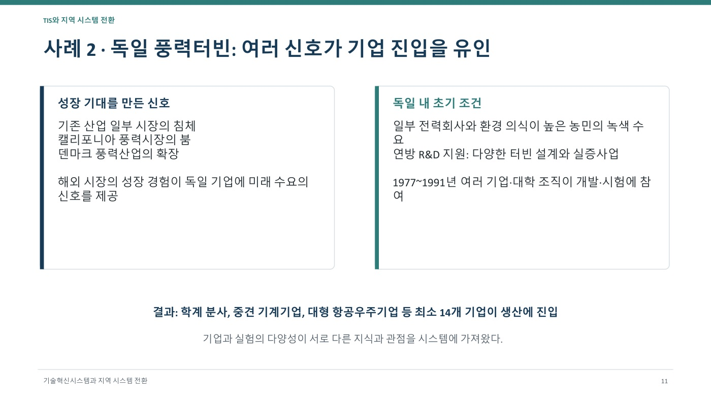
| 성장 기대를 만든 신호 | 독일 내 초기 조건 |
|---|---|
| 기존 산업 일부 시장의 침체 | 일부 전력회사와 환경 의식이 높은 농민의 녹색 수요 |
| 캘리포니아 풍력시장의 붐 | 연방 R&D: 다양한 터빈 설계와 실증사업 |
| 덴마크 풍력산업의 확장 | 1977~1991년 여러 기업·대학이 개발·시험에 참여 |
결과: 학계 분사, 중견 기계기업, 대형 항공우주기업 등 최소 14개 기업이 생산에 진입. "기업과 실험의 다양성이 서로 다른 지식과 관점을 시스템에 가져왔다."
지원액보다 기능을 움직인 연결 (W07a p37)
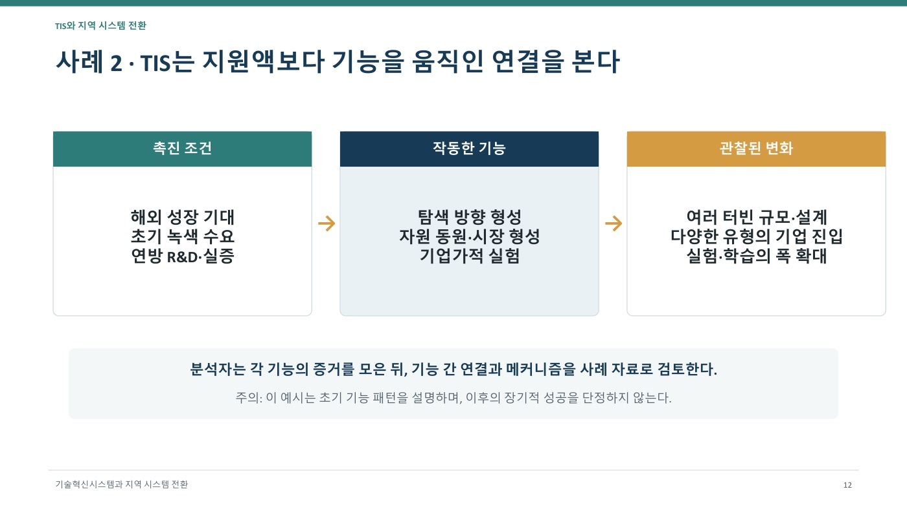
촉진 조건(해외 성장 기대·초기 녹색 수요·연방 R&D·실증) → 작동한 기능(탐색 방향 형성, 자원 동원·시장 형성, 기업가적 실험) → 관찰된 변화(여러 터빈 규모·설계, 다양한 유형의 기업 진입, 실험·학습의 폭 확대). 주의: 이 예시는 초기 기능 패턴을 설명하며 이후의 장기적 성공을 단정하지 않는다.
덴마크 이야기 — 바텀업 풍차와 큰 R&D의 실패 시험 포인트
이게 진짜 그린이 바텀업으로 나온 거예요. 덴마크는 땅은 넓은데 사람이 별로 없으니까 학교를 중심으로 한 마을 공동체가 굉장히 발달했어요. 오일쇼크 겪을 때, 새마을 지도자 하듯이 마을 지도자 한 분이 '우리 풍차 만들어서 전력을 만들자' 하고 시작을 해서 성공을 했어요. 쭉 퍼졌어요.
오히려 덴마크 정부에서 '이거 잘 됐다, 비즈니스 하자'고 해서 R&D에 넣어서 큰 걸 만들었어요. 근데 안 됐어. 처음부터 너무 큰 걸 해가지고. 갖다 쓰지도 않았어요. 다 조그마한 것만 원했는데. 그래서 그 R&D 프로젝트에 실패하고 다시 작은 것부터 시작해서 Vestas라는 회사가 세계적인 회사가 됐고, 그걸 독일이 옆에서 보고 '우리도 하자' 해서 엄청나게 투자를 했어.
보충시험 포인트수업노트 정제 노트: 이 일화는 W02-1/06 불만족스러운 혁신(Lundvall) — 사용자를 무시한 공급자 주도 R&D의 실패 — 과 정확히 같은 구조다. 사용자(마을)는 작은 풍차를 원했는데 공급자(정부 R&D)는 큰 것을 만들었다.
보충또 W03/12·15의 Phase 0 혁신 공유지와도 겹친다. 덴마크 마을의 풍차는 시장도 가격도 없던 단계에서 공동체가 모여 만든 것(Phase 0)이고, Vestas가 그것을 시장(Phase 1)과 규모(Phase 2)로 키웠다. 정부가 Phase 2로 바로 가려 한 것이 실패했다 — W03의 "우리는 계속 Phase 2에서만 해 왔다"와 같은 이야기.
수업에서 나온 논점
- 보충독일 사례는 TIS 일곱 기능 중 탐색 방향 형성(해외 신호가 기대를 만듦)이 먼저 움직인 경우다. W08/03의 "기능은 순서가 정해져 있지 않다"의 예.
보충 사례 보충
- 보충덴마크 협동조합 풍력: 덴마크에서는 주민이 지분을 나눠 갖는 풍력 협동조합이 확산됐고, 코펜하겐 앞바다의 미들그룬덴 해상풍력단지는 절반을 시민 협동조합이 소유했다. 교수님이 말한 '바텀업'의 제도화된 형태다.
- 보충Vestas: 원래 농기계 회사였다가 1970년대 말 풍력터빈으로 전환했다. 지금도 세계 최대급 풍력터빈 제조사다.
수업 프레임에서의 위치
- W08/05(수요가 막힌 사례)와 대비되는 기능이 연결되어 성장한 사례. 두 사례를 짝지으면 "수요·사용자가 시스템을 살리기도 막기도 한다"는 TIS의 교훈이 된다.
출처 · 태그
리딩
- Bergek et al. (2008)
수업노트
- 수업노트/W08_강의기록_261024.md §2-6
태그
예상 퀴즈 포인트
- 독일 풍력 TIS에서 어떤 촉진 조건이 어떤 기능을 움직였는지 설명하라. ("지원액보다 기능을 움직인 연결") 서술형
- 덴마크 정부의 대형 풍력 R&D가 실패하고 Vestas가 성공한 이야기를 '불만족스러운 혁신' 또는 '혁신 공유지(Phase 0)' 개념으로 해석하라. 서술형
TIS의 여섯 가지 비판 — 특히 '정치의 주변화'
Six criticisms of TIS (Markard, Hekkert & Jacobsson 2015) — context, boundary, space, transition, politics, policy advice
한 줄 정의
TIS에 대한 여섯 비판 — 맥락 · 경계 · 공간 · 전환 분석 · 정치의 주변화 · 정책 권고 — 과 그에 대한 응답(Markard et al. 2015)이다. 교수님이 가장 강조한 것은 정치의 주변화다. 기능으로 나누면 계획·설명할 때는 되지만 현장은 폴리틱스와 변수가 많은데, TIS에는 "레지티메이션 정도밖에 안 들어온다."
쉽게 말하면 보충
자동차 정비 체크리스트(일곱 기능)는 엔진·브레이크·타이어를 잘 점검해 준다. 하지만 누가 운전대를 잡을지 싸우고 있는지, 이 길이 통행금지인지, 옆 차선의 다른 차(경쟁 기술)는 체크리스트에 없다.
핵심 내용
여섯 비판 ① 맥락·경계·공간 (W07a p38)
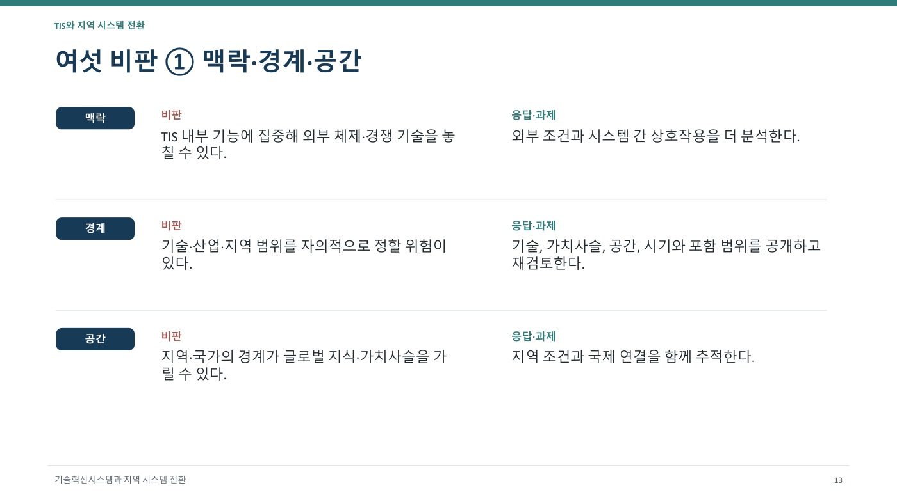
여섯 비판 ② 전환·정치·정책 권고 (W07a p39)
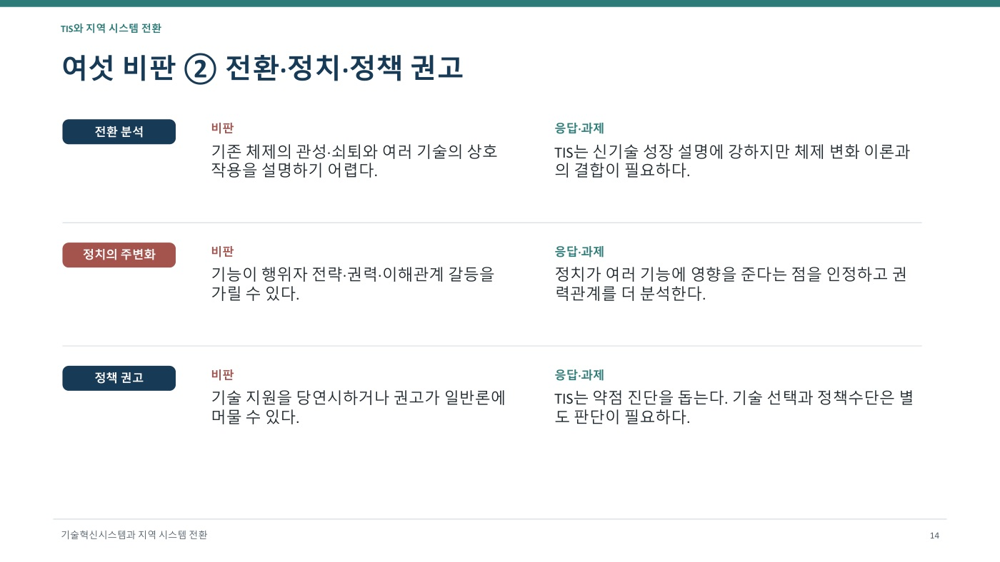
| 비판 | 내용 | 응답·과제 |
|---|---|---|
| 맥락 | 내부 기능에 집중해 외부 체제·경쟁 기술을 놓칠 수 있다 | 외부 조건과 시스템 간 상호작용을 더 분석 |
| 경계 | 기술·산업·지역 범위를 자의적으로 정할 위험 | 기술·가치사슬·공간·시기와 포함 범위를 공개하고 재검토 |
| 공간 | 지역·국가 경계가 글로벌 지식·가치사슬을 가릴 수 있다 | 지역 조건과 국제 연결을 함께 추적 |
| 전환 분석 | 기존 체제의 관성·쇠퇴와 여러 기술의 상호작용을 설명하기 어렵다 | 신기술 성장 설명엔 강하지만 체제 변화 이론과의 결합 필요 |
| 정치의 주변화 | 기능이 행위자 전략·권력·이해관계 갈등을 가릴 수 있다 | 정치가 여러 기능에 영향을 준다는 점을 인정하고 권력관계 분석 |
| 정책 권고 | 기술 지원을 당연시하거나 일반론에 머물 수 있다 | TIS는 약점 진단을 돕는다. 기술 선택과 정책수단은 별도 판단 |
보충외우는 요령: 앞의 셋(맥락·경계·공간) = "어디까지가 시스템인가"의 문제, 뒤의 셋(전환·정치·정책) = "시스템이 바뀌는 힘을 설명하나"의 문제.
정치의 주변화 — 교수님의 강조 시험 포인트
기업가적 활동, 지식 개발, 정당성 형성 이런 펑션을 하니까 플래닝하거나 계획해서 설명할 때는 되죠. 그런데 실제 상황 어떻습니까? 현장은 폴리틱스와 여러 가지 변수들이 많이 있잖아요. 그거를 다 담아내기는 쉽지 않다. 그게 들어와야 되는데 레지티메이션 정도밖에 안 들어오니까.
보충시험 포인트이 비판은 학기 내내 반복된 교수님의 판정과 같은 계열이다.
- W05-1/13: Mode 2·TH는 공급자 중심이다.
- W06/10: NIS는 매니저 입장이고 권력정치를 덜 설명한다.
- W08/07: TIS는 정치를 기능 뒤에 숨긴다(주변화). → 세 시스템 이론 모두 "누가 정하나"를 묻지 않는다는 공통 한계. 비교형 답안 소재로 좋다.
수업에서 나온 논점
- 수업노트 토론 질문 후보: "TIS의 '정치의 주변화' 비판 — 정당성(legitimation) 기능 하나로 정치를 충분히 담을 수 있나."
- 보충'전환 분석 비판'은 다음 이론들의 자리를 만든다. TIS가 신기술 하나의 성장만 보니, 기존 체제(regime)의 저항과 쇠퇴를 함께 보는 사회기술시스템·다층적 관점(MLP)이 필요해진다(계획표상 StS·전환론 주차, 아직 미강의).
- 보충'공간 비판'은 GIS(글로벌혁신시스템)로 이어진다(계획상 다음 주제).
보충 사례 보충
- 보충전기차 TIS의 정치: 전기차 보급은 기능(지식·시장·자원)만이 아니라 내연기관 산업·노조·산유 지역의 이해관계, 보조금 정치에 크게 좌우된다. 기능 분석만으로는 왜 어떤 나라에선 보조금이 끊기고 어떤 나라에선 늘어나는지 설명하기 어렵다.
수업 프레임에서의 위치
- TIS의 평가 파트. 다음 황혜란 사례(W08/08)에서도 교수님 슬라이드는 결국 "정치와 기술을 함께 추적하라"(p46–47)로 끝난다.
출처 · 태그
리딩
- Markard, Hekkert & Jacobsson (2015)
- Köhler et al. (2020)
수업노트
- 수업노트/W08_강의기록_261024.md §2-7
태그
예상 퀴즈 포인트
- TIS에 대한 여섯 비판을 쓰고 각각의 응답·과제를 설명하라. 서술형
- '정치의 주변화' 비판을 설명하고, 정당성 기능만으로 정치를 담을 수 있는지 논하라. (교수님 발언 근거) 서술형
- 비교형: NIS의 한계(W06/10)와 TIS의 정치 주변화 비판은 어떻게 같은 문제인가? 비교형
황혜란의 대덕 vs 신주 — 같은 개발국가 출발, 다른 진화
Daedeok Innopolis vs Hsinchu Science Park (Hwang 2016) — functional dynamics of regional innovation systems
한 줄 정의
황혜란(2016)은 TIS의 기능 분석을 지역혁신시스템에 적용해, 둘 다 개발국가의 기획으로 시작한 한국 대덕연구개발특구와 대만 신주과학산업단지가 왜 다르게 진화했는지 비교했다. 대덕은 지식 개발·자원 동원은 강하지만 연결(사업화·확산)이 약했고, 신주는 공공연구기관(ITRI·ERSO)이 기업 분사·인력 이동·글로벌 시장의 매개기관이 되었다. 결론: "국가 개입의 존재보다, 그 개입이 어떤 조직·관계·시장 연결을 통해 작동했는지가 차이를 만든다."
쉽게 말하면 보충
같은 부모(개발국가)가 같은 학원비를 대준 두 아이. 대덕이는 공부(논문·특허)는 잘하는데 친구가 없고 졸업 후 갈 데가 없다. 신주는 공부하다가 친구들과 창업해서 해외 거래처를 뚫었다. 차이는 학원비 액수가 아니라 누구와 어떻게 연결됐느냐였다.
핵심 내용
연구 설계 (W07a p40)
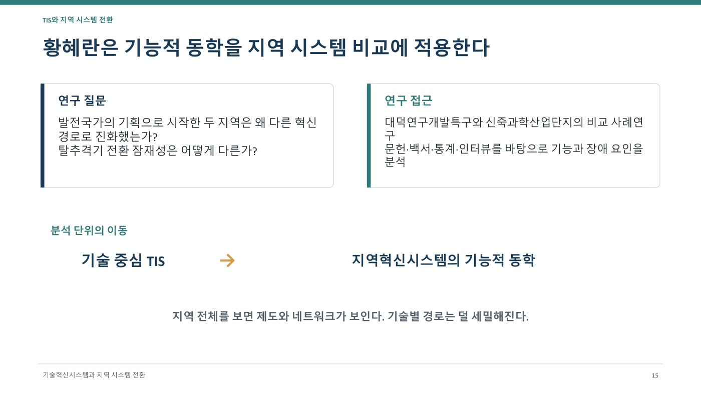
- 연구 질문: 개발국가(발전국가)의 기획으로 시작한 두 지역은 왜 다른 혁신 경로로 진화했는가? 탈추격기 전환 잠재성은 어떻게 다른가?
- 접근: 문헌·백서·통계·인터뷰 기반 비교 사례연구.
- 분석 단위의 이동: 기술 중심 TIS → 지역혁신시스템의 기능적 동학. 지역 전체를 보면 제도와 네트워크가 보이지만 기술별 경로는 덜 세밀해진다.
1) 대덕 (W07a p41–42)
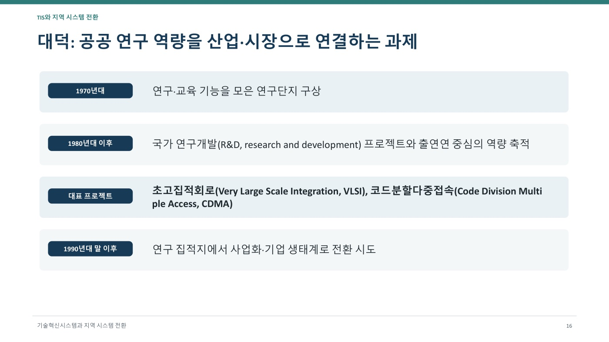
1970년대 연구단지 구상 → 1980년대 이후 국가 R&D와 출연연 중심 역량 축적 → 대표 프로젝트 VLSI, CDMA → 1990년대 말 이후 사업화·기업 생태계로 전환 시도.
- 50년 가까이 됐다. KAIST, 출연연, 충남대 — 실리콘밸리를 만들 조건이 다 갖춰져 있었지만, 출연연은 벤처가 아니라 정부 일을 하니 그만한 역동성은 없었다.
- 출연연의 역사: 아무것도 없던 나라에서 산업화를 지원하려고 만들었다. 흡수역량으로 배우다가 "국산화하자" 할 때 ETRI가 대기업 두세 곳과 함께 TDX → VLSI → CDMA를 성공시켰다. 1980년대 중반 이후가 출연연의 전성기. 이후 기업이 자체 R&D 역량을 갖추면서 출연연과 같이 할 이유가 줄었다.
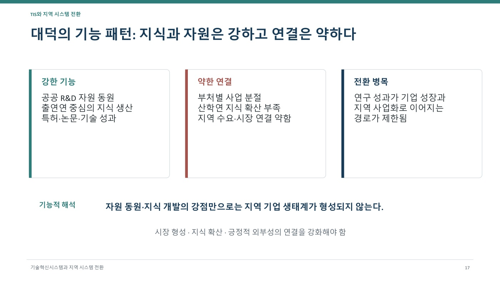
| 강한 기능 | 약한 연결 |
|---|---|
| 공공 R&D 자원 동원, 출연연 중심 지식 생산, 특허·논문·기술 성과 | 부처별 사업 분절, 산학연 지식 확산 부족, 지역 수요·시장 연결 약함 |
"자원 동원·지식 개발의 강점만으로는 지역 기업 생태계가 형성되지 않는다."
- 대전과 대덕 출연연은 따로 놀았다 — 출연연 사람들은 자신을 지역 플레이어가 아니라 국가·글로벌 플레이어로 여겼다.
- 대덕이 안 된 핵심 이유는 수요가 없다는 것 → W08/09.
2) 신주 (W07a p43–44)
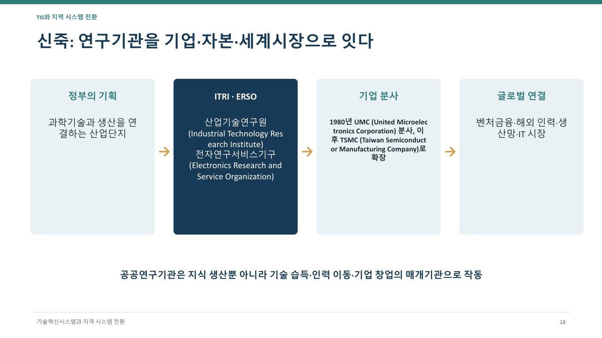
정부 기획 → ITRI(산업기술연구원)·ERSO(전자연구서비스기구) → 기업 분사(1980 UMC, 이후 TSMC) → 글로벌 연결(벤처금융·해외 인력·생산망·IT 시장). "공공연구기관은 지식 생산뿐 아니라 기술 습득·인력 이동·기업 창업의 매개기관으로 작동."
- 시험 포인트한국과의 결정적 차이: 한국은 재벌을 크게 밀어 OEM → ODM → OBM으로 자기 브랜드를 만들었다. 대만은 중소기업 중심으로 미국 회사의 OEM에 계속 머물렀다. TSMC는 결국 고도로 과학·기술 집약적인 OEM(파운드리) 회사다.
여기서 아까 상호작용·흡수역량 얘기가 나오는 게, TSMC의 역량은 정말 온갖 데랑 다 상호작용을 하기 때문에 생기는 거예요. 한두 군데만 하는 게 아니고 얘도 하고 얘도 하고 얘도 하니까 다 해줄 수 있어요. 마치 컨설팅 회사 비슷한 거죠. 그 5만 가지에 다 대응할 수 있다는 게 쉽지 않죠.
- 다이내믹 케이퍼빌리티(sensing·seizing·transforming)와 연결: TSMC는 흡수역량을 바탕으로 재구성(reconfiguring)을 잘한다.
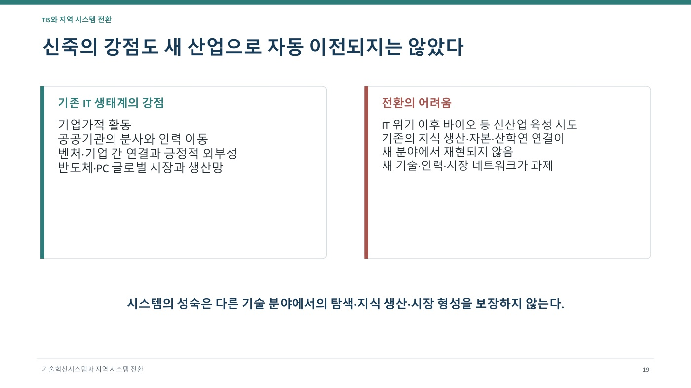
- IT 위기 이후 바이오 등 신산업 육성을 시도했지만 기존의 지식 생산·자본·산학연 연결이 새 분야에서 재현되지 않음. "시스템의 성숙은 다른 기술 분야에서의 탐색·지식 생산·시장 형성을 보장하지 않는다."
- IT와 바이오는 정당성 체제가 다르다: 바이오는 대형 제약사 몇 곳이 지배하고 안전 규제(safety regime)가 매우 강하다. mRNA 백신은 예전 시스템이라면 절대 나올 수 없었다 — 코로나라는 위기가 터져서 등장한 것.
3) 종합 비교 (W07a p45) 시험 포인트
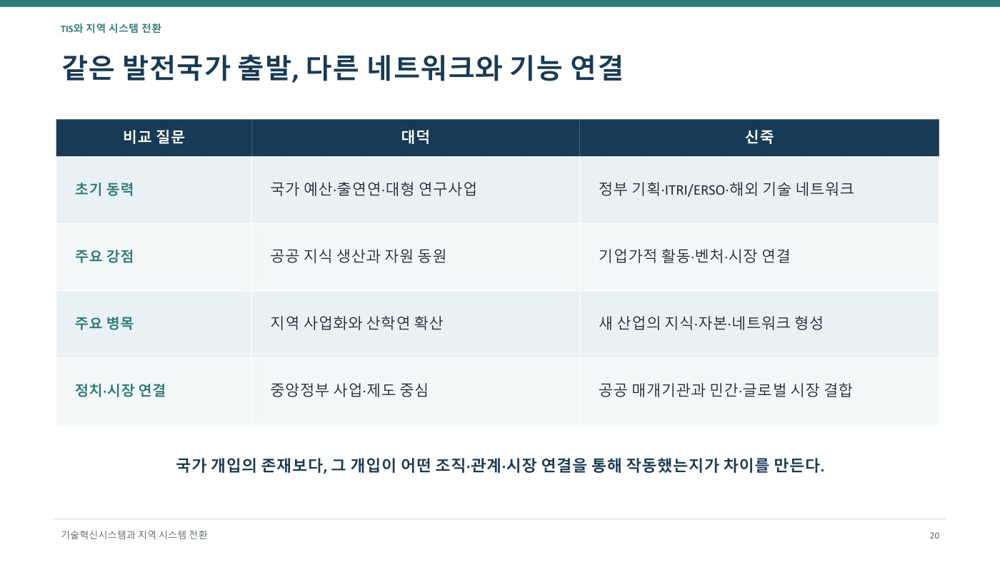
| 대덕 | 신주 | |
|---|---|---|
| 초기 동력 | 국가 예산·출연연·대형 연구사업 | 정부 기획·ITRI/ERSO·해외 기술 네트워크 |
| 주요 강점 | 공공 지식 생산과 자원 동원 | 기업가적 활동·벤처·시장 연결 |
| 주요 병목 | 지역 사업화와 산학연 확산 | 새 산업의 지식·자본·네트워크 형성 (해외 대응에 익숙해 내부 지식 기반 축적이 늦었다) |
| 정치·시장 연결 | 중앙정부 사업·제도 중심 | 공공 매개기관과 민간·글로벌 시장 결합 |
시험 포인트"국가 개입의 존재보다, 그 개입이 어떤 조직·관계·시장 연결을 통해 작동했는지가 차이를 만든다."
- 용어 메모 — 개발국가 vs 발전국가: 둘 다 developmental state의 번역. 교수님도 예전엔 "발전국가"를 썼지만 지금은 "개발국가"가 더 맞는다고 본다.
4) 정치와 기술을 함께 추적하라 (W07a p46–47)
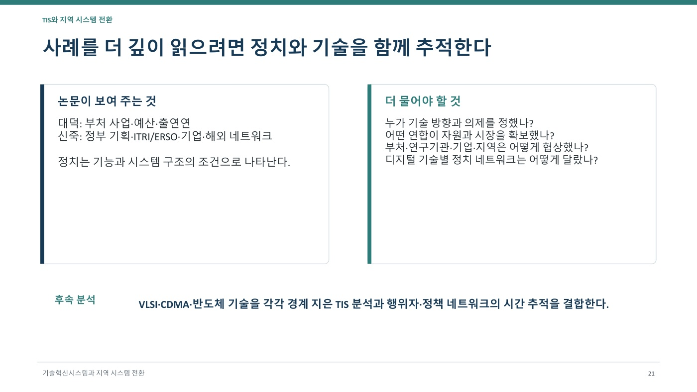
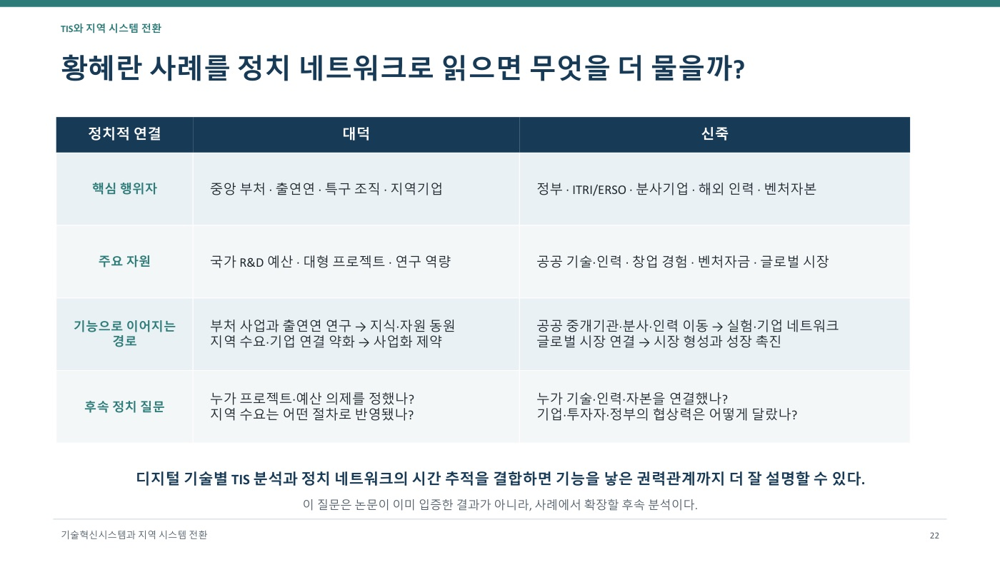
- 더 물어야 할 것: 누가 기술 방향과 의제를 정했나? 어떤 연합이 자원과 시장을 확보했나? 부처·연구기관·기업·지역은 어떻게 협상했나? 디지털 기술별 정치 네트워크는 어떻게 달랐나?
- 후속 분석: VLSI·CDMA·반도체를 각각 경계 지은 TIS 분석 + 행위자·정책 네트워크의 시간 추적을 결합. "이 질문은 논문이 이미 입증한 결과가 아니라, 사례에서 확장할 후속 분석이다."
보충W08/07 정치의 주변화 비판을 이 논문에 직접 적용한 것이다. 교수님 슬라이드가 논문을 소개하고 끝내지 않고 한계와 후속 질문까지 붙였다 — 교수님의 '소개 → 비판 → 자기 주장' 패턴.
수업에서 나온 논점
- Q15. 대덕 출연연은 왜 과거보다 기업 연계가 약해졌나:
기업의 역량이 커졌어요. 아주 쉽게 얘기하면. 그리고 출연연 정도를 수요로 가지는 기업은 대부분 중견기업 이상이잖아요. 그리고 출연연은 나라에서 돈 받지 기업한테 돈 받는 게 아니거든. 이명박 정부 때 '니들이 알아서 살아라' 하려고 했었는데 못하지. 시장 시스템이 아직 잘 작동이 안 되고 있는 부분이 있어요.
- 수업노트 토론 질문 후보: 한국(재벌·OBM)과 대만(중소기업·OEM)의 경로 중 AI 시대에 어느 쪽이 유리한가.
- 보충ETRI–대기업의 TDX·CDMA는 W06/06 "정부가 사용자가 되다"의 실례다(정부·통신공사가 까다로운 사용자). 그 사용자 역할이 사라지자 출연연의 연결도 약해졌다.
보충 사례 보충
- 보충ITRI의 분사 모델: ITRI는 1970년대 미국 RCA에서 반도체 기술을 이전받아 시범 생산라인을 운영한 뒤, 그 인력과 설비로 UMC(1980), TSMC(1987)를 분사시켰다. 공공연구기관이 기업을 낳는 인큐베이터 역할을 한 대표 사례다.
수업 프레임에서의 위치
- TIS 강의의 본 사례이자 계획표상 TIS 주차 Core Reading. 앞의 개념(기능·메커니즘·비판)을 한국 맥락에 적용하고, 교수님의 핵심 주장(수요, W08/09)으로 이어진다.
출처 · 태그
리딩
- 황혜란 (2016) 후발산업국 지역 혁신 시스템 진화의 다양성과 전환 가능성 ★TIS Core Reading
수업노트
- 수업노트/W08_강의기록_261024.md §2-8
- 수업노트/W08_강의기록_261024.md §2-9
- 수업노트/W08_강의기록_261024.md §3 Q15
태그
예상 퀴즈 포인트
- 대덕과 신주를 초기 동력·주요 강점·주요 병목·정치·시장 연결로 비교하고, "국가 개입의 존재보다 작동 방식이 차이를 만든다"는 결론을 설명하라. 비교형
- 대덕의 기능 패턴("지식과 자원은 강하고 연결은 약하다")을 TIS 일곱 기능으로 진단하라. 서술형
- 한국(OEM → ODM → OBM)과 대만(OEM·파운드리)의 경로 차이를 설명하고, TSMC의 역량이 어디서 나오는지 교수님의 설명으로 쓰라. 비교형
- 황혜란 연구의 한계를 '정치의 주변화' 관점에서 논하라. 서술형
수요가 있는 곳에 가야 한다 — 지역 혁신 생태계의 조건
Demand as the condition of regional innovation ecosystems; anchors linked to global markets (professor's argument)
한 줄 정의
지역 혁신이 안 되는 핵심 이유는 연구·대학이 부족해서가 아니라 그 지식을 받아서 쓸 수요가 근처에 없어서다. "수요가 있는 곳에 가야 돼요. 아니면 수요를 만들든지." 그래서 대학을 세우는 것만으로는 안 되고, 지역은 수도권이 아니라 세계 시장과 바로 연결된 앵커를 잡아야 한다. 그리고 "모두가 다 실리콘밸리가 될 수는 없다."
쉽게 말하면 보충
빵을 아무리 잘 굽는 제빵 학교를 시골에 세워도, 빵을 사 먹을 사람이 근처에 없으면 졸업생들은 서울로 떠난다. 해법은 둘 중 하나다. 손님이 많은 곳에 학교를 세우거나, 대형 호텔(앵커)을 유치해서 빵을 대량으로 사 줄 고객을 만들거나.
핵심 내용
1) 대덕이 안 된 이유 — 받아먹는 데가 없다 시험 포인트
대덕이 잘 안 된 거는 수요가 별로 없어요. 대덕에서 뭘 하면 그걸 받아먹는 데가 쭉쭉 있으면 나갔지. 근데 받아먹는 데가 없어요. 학생들이 어떻게 보면 유일한 주요 수요층이고. 그걸 받아서 쓸 사람들이 대전 근처에 없어요. 그나마 생기는 게 바이오고.
수요가 있는 곳에 가야 돼요. 아니면 수요를 만들든지. 실리콘밸리 만들겠다고 다들 서울대 10개도 만들고 한단 말이에요. 걔는 안 돼요. 대학만 있다고 되는 게 아니에요. 거기서 나온 지식을 받아서 쓸 사람, 대학에 와서 '우리 좀 해달라' 하면서 끌고 갈 사람이 근처에 있어야 돼요. 그래야 생태계가 돌아갑니다. 그래서 혁신 생태계라는 말이 나오는 거예요.
보충시험 포인트교수님이 "혁신 생태계"라는 말이 나오는 이유를 직접 정의한 대목이다. 생태계 = 지식을 만드는 쪽과 쓰는 쪽이 가까이 있어 서로 끌고 가는 구조. W01/11 Innovation Ecosystem의 하류 보완재(수요 쪽) 병목과 같은 이야기다.
2) 피지컬 AI도 마찬가지 — So what? 시험 포인트
피지컬 AI, AX 많이 얘기하잖아요. 근데 뭐가 안 나와요. 지금 되는 건 LLM 사람들이 쓰는 것만 하지, 로봇 만들어서 쇼는 열심히 해. 그래서 So what? 효과가 뭐 있어. 왜냐, 그걸 수요하는 데가 아직 없어. 누가 쓸 거냐, 거기서부터 시작이 돼야 돼요.
3) Q18. 수요는 수도권에만 있지 않나? — 세계 시장을 직접 보라 시험 포인트
질문(배달의민족 참석자): 엔드 유저까지 고려한 시장성이 중요하다는 데 공감하지만, 수요가 몰린 곳은 매우 제한적이다. 대덕처럼 지방 거점을 만들어도 불충분해 보이는데, 시장성까지 연결되는 지방 거점 생태계는 어떻게 가능한가.
굉장히 잔인한 얘기지만, 모두가 다 실리콘밸리가 될 수는 없어요. 모두가 다 될 것처럼 얘기하지만 그렇게 될 수는 없어요. 잔인한 얘기지만 현실은 있습니다. 그럼에도 불구하고 그걸 잘 찾아내는 게 숙제가 되는 거죠.
광주·전남 프로젝트가 그나마 가능성이 있는 게, 세계 시장과 연결된 앵커가 들어왔잖아요. 수요가 바로 옆에는 없지만. 그러니까 거꾸로 말씀드리면 한국의 지역 발전에서는 수도권을 보지 말고 바로 다이렉트로 시장을 봐야 돼요. 세계 시장을 보는 작전을 써야 됩니다. 부산도 그렇고 대전도 그렇고.
보충시험 포인트논리 정리:
- 혁신 생태계는 지식을 쓸 수요가 있어야 돈다.
- 한국의 수요는 수도권에 몰려 있다 → 지방은 불리하다.
- 그래서 지방은 수도권 수요를 쫓지 말고 세계 시장과 직결된 앵커(대형 기업·공장)를 통해 수요를 들여와야 한다.
- 그래도 모든 지역이 성공할 수는 없다 — 골라내는 것이 정책의 숙제.
수업에서 나온 논점
- 보충시험 포인트W07-1/03 "n분의 1 vs 다양성"과 연결된다. 서울대 10개 만들기가 n분의 1이 되는 이유를 교수님은 여기서 수요 부재로 설명한다. 대학(공급)만 균등 배분하면 생태계가 생기지 않는다.
- 보충W06/05의 "액터는 다 있는데 네트워크가 작동 안 한다(지역에 가면 다 있어, 쓰질 않아)"와 같은 진단을, W08에서는 수요라는 원인으로 한 단계 더 설명했다.
- 수업노트 정제 노트: Q18의 "세계 시장 직접 연결"은 W03·W05의 부울경 데이터 커먼스 논의와 같은 방향이다.
- 보충W03/17 "거버넌스는 국지적이어야(부산은 부산 단위로)"와 함께 읽으면, 교수님의 지역 전략은 거버넌스는 지역 단위, 시장은 세계 단위다.
보충 사례 보충
- 보충앵커 기업 전략: 한 지역에 세계 시장과 연결된 대기업 공장·연구소를 유치해 협력사·인력·서비스 수요를 함께 끌어오는 방식. 평택 반도체 클러스터, 미국 애리조나의 TSMC 공장이 대표적이다. 다만 앵커가 지역 기업과 연결되지 않으면 '섬'이 될 수 있다(W06/05의 액터만 있는 문제).
수업 프레임에서의 위치
- TIS 강의의 결론이자 교수님 주장. TIS 기능 중 시장 형성과 저해 메커니즘의 불명확한 수요를 지역 정책 차원으로 끌어올린 것. 학기 내내 이어진 교수님의 "공급이 아니라 수요부터" 관점(W05-1/13, W06/10, W07-1/01)의 지역판이다.
출처 · 태그
수업노트
- 수업노트/W08_강의기록_261024.md §2-8 대덕
- 수업노트/W08_강의기록_261024.md §3 Q18
태그
예상 퀴즈 포인트
- 교수님이 대덕이 실리콘밸리처럼 되지 못한 이유로 든 것은 무엇이며, 그것이 "혁신 생태계"라는 말과 어떻게 연결되는가? 서술형
- 수요가 수도권에 몰린 한국에서 지역 혁신 생태계는 어떻게 가능한가? 교수님의 '세계 시장 직결 앵커' 주장을 근거로 논하라. 서술형
- 비교형: W06의 "액터는 있는데 네트워크가 작동 안 한다"와 W08의 "수요가 없다"는 같은 문제를 어떻게 다르게 설명하는가? 비교형